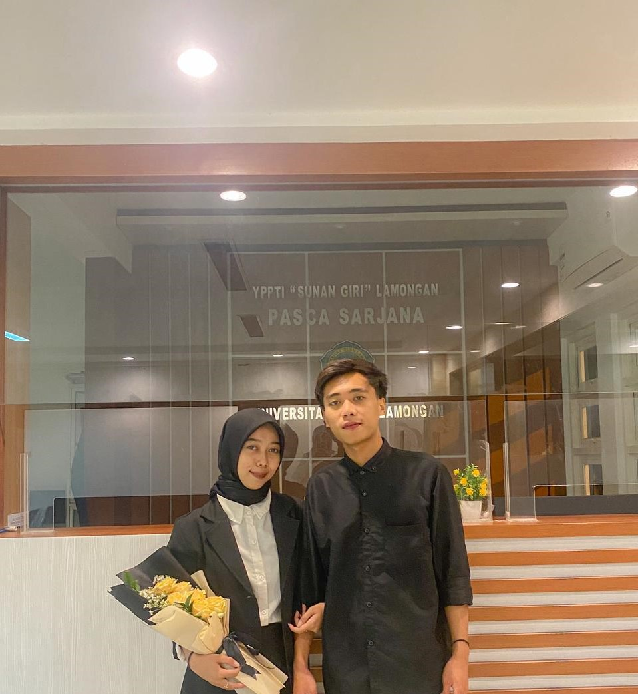

Kenangan kita — momen kecil yang indah
Di sini aku menaruh kenangan — waktu pertama tawa, hari-hari biasa yang jadi istimewa, dan janji-janji kecil yang membuat kita bertahan. Buka halaman demi halaman, dan semoga setiap fragmen mengingatkanmu betapa berharganya kamu.